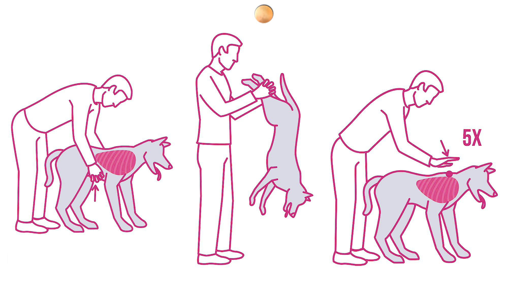

MANIOBRA DE HEIMLICH
Antes de entrar en pánico hay que detectar si nuestro compañero peludo efectivamente se está asfixiando, es decir, es incapaz de respirar, a causa de un atragantamiento por ingerir un cuerpo extraño que le obstruye las vías respiratorias, es decir, debemos descartar que sea tos, disnea u otros problemas respiratorios. El atragantamiento puede ser parcial, si el cuerpo extraño permite el paso de aire, aunque sea con dificultad, o total, cuando impide totalmente el paso de aire.
En caso de asfixia, nuestro perro se pondrá muy nervioso, ya que no sabrá qué le ocurre y sentirá miedo. También es común que se rasque la boca con insistencia. Todas estas señales pueden indicarnos de que nuestro perro está sufriendo un caso de asfixia y que debemos intervenir para ayudarle a respirar normalmente.
¿Cómo lograrlo? Una de las técnicas más efectivas es la llamada maniobra de Heimlich, un procedimiento que ayuda a liberar el conducto respiratorio de un cuerpo extraño obstruido y evitar la asfixia por atragantamiento. Veamos en qué consiste exactamente.
En primer lugar tienes que asegurarte de que, efectivamente, el perro se está ahogando. Para ello abre su boca y revisa que no tenga un cuerpo extraño. Si observas algo en su garganta trata de sacarlo con tus dedos o tira de su lengua para que lo escupa, poniendo especial atención si detectas un objeto con puntas o bordes filosos como huesos astillados o agujas.
Si no conseguimos sacar el cuerpo extraño, antes de probar con la maniobra de Heimlich, intenta que el perro lo expulse por su cuenta. Si el perro es pequeño puedes sujetarlo de las caderas y colocarlo boca abajo. Si es grande y pesado, puedes probar a levantar sus patas traseras mientras el perro sigue apoyándose sobre las delanteras, como si estuvieras llevando una carretilla.
En el caso de que el atragantamiento persista llevaremos a cabo la “maniobra de Heimlich”, que fue descrita por primera vez en 1974 por el doctor estadounidense Henry Heimlich (de ahí su nombre) para su aplicación en humanos.
Para poder realizarla de forma correcta en perros debes seguir una serie de pasos. No olvides que tu amigo estará probablemente muy alterado, así que ten cuidado cuando pongas tu mano en su boca, puesto que podría morderte simplemente por los nervios.
- Primero, coloca su espalda contra tu pecho y junta ambas manos justo por debajo de sus costillas. A continuación empuña tus manos y aprieta hacia adentro y arriba 5 veces. Cuando se trate de un perro grande, colócate detrás, pon tus brazos alrededor suyo (siempre debajo de las costillas) y realiza este mismo movimiento.
- Si el problema persiste, colócalo en una posición sentada o parada y dale otros 5 golpecitos secos entre las escápulas con el canto de tu mano. Mientras realizas la maniobra, no dejes de revisar su boca para ver si ha logrado expulsar el objeto. Continúa con los pasos mencionados hasta que consigas sacar el cuerpo extraño.
- Si tu compañero queda inconsciente, deberemos comprobar si respira y si tiene pulso. En el caso de que no detectemos pulso y haya entrado en parada cardiorrespiratoria, será necesario realizar la reanimación cardiopulmonar (RCP), aplicando 5 insuflaciones junto con 5 compresiones en el tórax, de manera continua hasta que salga el objeto. Tan pronto como sus vías respiratorias queden libres, revisa su ritmo cardíaco y frecuencia respiratoria.
Para poder realizarla de forma correcta en perros debes seguir una serie de pasos. No olvides que tu amigo estará probablemente muy alterado, así que ten cuidado cuando pongas tu mano en su boca, puesto que podría morderte simplemente por los nervios.